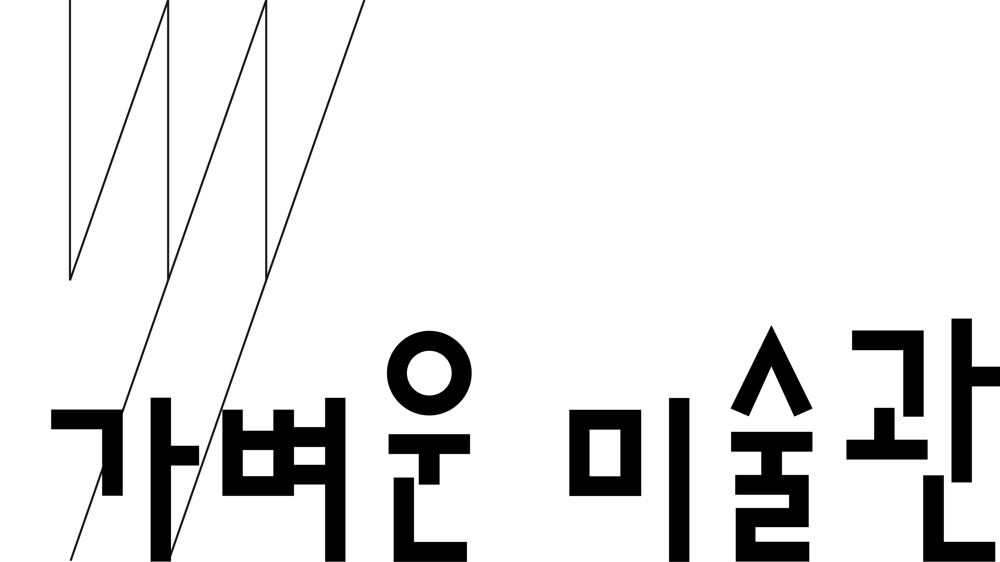

난잡한 현대미술을 바라보는 우리는 맥락을 놓칠까봐 의심과 회초리를 들고 바라본다.
그러나 고전미술을 대할때 우리는 그저 그 작품을 맥락의 의심 없이 ‘틀안에 갇힌 단순함’으로 대하게 된다
나는 현대사회의 도파민 과다 세상에 틀을 던지고 싶다.
그리고 그 틀안에 갇혀 작품을 온전히 느낄수 있게 맥락을 놓칠까 무서운 사람들을 작품을 즐기는 온전함으로 인도해주고 싶다.
빈 곳을 클릭하거나 사진을 끌어다 놓으세요
휴대폰에서는 보기와 간단한 이동만 편해요. 사진을 연결해 전시를 설계할 땐 컴퓨터를 추천해요.
붓